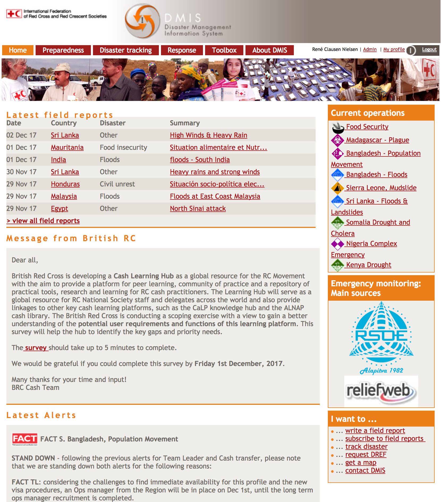

IFRC Go Development
Update, January 2018
How We Do It: Modularity
Building small things and connecting them makes it easier to adapt, align, share and upgrade individual parts.
APIs
- Making data from Excel sheets and similar available to others through simple sharing and APIs
- We're currently creating APIs for IFRC data so others can use it
- Only use data from external partners that is easy to maintain and update
Segregation of Functionalities
- Backend segregated from frontend
- Secondary analysis in The Data Entry and Exploration Platform (DEEP)
- Core GIS functionality in specialised GIS software (GeoNode)
- Mobile Data Collection using ODK & KoBo
- etc.
Data Sharing
Tech: Modern + Mature


Phase 0 (Last 12 Months)
Prototyping, Testing Ideas, Changing Minds
Homepage
Individual Operation
Ongoing Operations

Historic Deployments

Phase 1 (Ongoing - January 2018)
Setting Up Core Technology + New Design
New Design: Homepage
New Design: Field Report
New Design: Emergencies
New Design: Individual Emergency
New Design: Deployments
New Design: Subscriptions
Phase 2 (Expected March-August 2018)
Contextual Information &
National Society Users
Baselines & Context
User Experience
DMIS Closing Down

Phase 3 (Expected Late 2018)
Analysis & Translation
Current ideas include:
- Translation into official languages
- Tighter integrations with GeoNode, DEEP, ODK, and KoBo
- "First Reporter" (volunteers and staff sending SMS, Photos, Videos)
- Thematic and Sectorial Focus